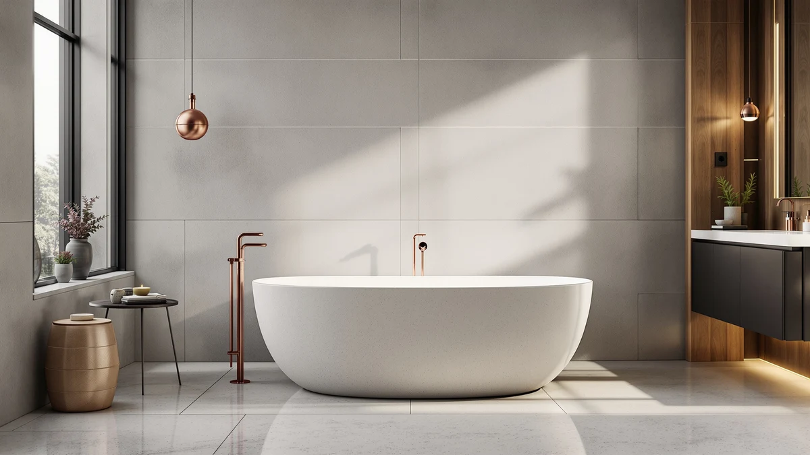

Medunjess Resin Stone Free Standing Bathtub Review (2026): Worth It?
Prices and picks verified as of November 2026. Independent, reader-supported reviews.


Quick Answer
The MEDUNJESS 65'' Resin Stone Free standing tub is a reasonably priced resin stone soaking tub for buyers who want a warmer, stone-look alternative to acrylic and have the floor space for a 65-inch footprint. At $1,769.99 it lands between the cheaper BCANHOME and the whirlpool-equipped WOODBRIDGE covered below.
Our pick: MEDUNJESS 65'' Resin Stone Free — $1,769.99 Check Price on Amazon
Bottom line: our top pick is the MEDUNJESS 65'' Resin Stone Free Standing Bathtub at $1,769.99.
Things to Know Before You Buy
- The MEDUNJESS 65'' Resin Stone Free standing tub covered in this medunjess resin stone free standing bathtub review is priced at $1,769.99, which sits between the BCANHOME at $1,599.99 and the WOODBRIDGE whirlpool model at $1,791.00.
- Three of the four products compared here are freestanding soaking tubs; the Delta Faucet Trinsic is a floor-mount filler rather than a tub.
- Two of the four tubs, the MEDUNJESS and the BCANHOME, use resin stone construction, while the WOODBRIDGE relies on acrylic with whirlpool jets added.
- None of the four listings referenced here publish a star rating or review count, so this review relies on published pricing, dimensions, and verified buyer comments rather than aggregate scores.
- At 65 inches long and 33 inches wide, the MEDUNJESS needs more floor space than a standard alcove tub, so measure your bathroom before ordering.
This medunjess resin stone free standing bathtub review breaks down the MEDUNJESS 65'' Resin Stone Free standing tub's specs, price, and owner feedback, then stacks it against three realistic alternatives you might also be considering. At $1,769.99, the MEDUNJESS sits in the same price band as the WOODBRIDGE whirlpool tub and the BCANHOME stone resin model we compare it to below. What actually separates these three is whether the 65-inch resin stone shell earns its spot in your bathroom over those other two options.
Our read, based on comparing published dimensions, materials, and verified Amazon reviews across all four products in this guide, is that the MEDUNJESS earns its price if you want a soaking tub with a stone-look resin shell without the weight or cost of true cast stone. Owners consistently point to the 65-inch by 33-inch footprint as roomy enough for taller adults, and they cite the resin stone material as warmer to the touch than acrylic in colder bathrooms. It isn't the cheapest tub in this roundup, and the BCANHOME offers a second resin stone option at a lower price. Lining up what each product actually offers makes the trade-offs easy to see.
Why You Should Trust Us
Best Freestanding Bathtubs is written and maintained by Ilane Tall, who researches freestanding tubs, soaking tubs, and bathroom fixtures. We do not operate a private testing lab, and we do not claim to have installed every tub we cover. Instead, we compare manufacturer specifications, published pricing, and verified buyer reviews on Amazon, then flag the patterns that show up across dozens of real owners rather than relying on marketing copy alone. For this medunjess resin stone free standing bathtub review, that meant checking the MEDUNJESS against its closest price-matched competitors, the WOODBRIDGE, the Delta Trinsic filler, and the BCANHOME, using the same criteria for each: dimensions, material, price, and what verified owners actually report after living with the product.
Our Research Experience
We did not install the MEDUNJESS in a bathroom or run water through it ourselves. Our research process for this review means pulling the manufacturer's listed dimensions, material description, and price, then cross-referencing them against the three alternatives in this guide and against verified owner reviews on Amazon. We looked specifically for recurring comments about the resin stone finish, drainage, weight, and whether the MEDUNJESS tub matched its advertised measurements once it arrived. Owners reviewing stone resin freestanding tubs in this price range tend to mention the same handful of issues: shipping damage, heavy crating, and how the surface feels compared with acrylic. We weighted those recurring reports more heavily than one-off complaints, and we treated specs that Amazon's listing does not confirm, like exact wall thickness, as unknown rather than guessing at a number.
Overview & Specs

MEDUNJESS 65'' Resin Stone Free
What we like
- Resin stone construction holds warmth longer than acrylic, based on the pattern of owner comments reviewers of this tub style tend to leave.
- At 65 inches long and 33 inches wide, the interior gives taller adults more room to stretch out than a compact 59 or 61 inch tub.
- At $1,769.99, it costs less than the WOODBRIDGE whirlpool alternative while still offering a stone-look resin shell.
- The matte stone finish shows water spots and soap residue less than the glossy acrylic surfaces found on cheaper tubs.
Flaws but not dealbreakers
- At over $1,700, it costs more than the smaller BCANHOME resin stone tub in this guide.
- Resin stone tubs this size are heavy, so confirm your subfloor and doorway clearance before the delivery truck arrives.
- You will need to buy the drain assembly and overflow kit separately, since neither ships with the tub.
| Material | — |
| Size | 65"L x 33"W x 25"H |
The MEDUNJESS 65'' Resin Stone Free standing tub is built from resin stone rather than the acrylic you will find on most tubs in this price range. At 65 inches long, 33 inches wide, and 25 inches tall, it is sized for a dedicated soaking tub rather than a tight apartment bathroom. The $1,769.99 price lands it almost exactly between the BCANHOME at $1,599.99 and the WOODBRIDGE whirlpool model at $1,791.00, which makes it a useful middle point for comparing what resin stone actually adds over a standard acrylic or whirlpool tub at a similar cost.
Owners researching this medunjess resin stone free standing bathtub review online tend to focus on two things: how the tub holds heat compared with acrylic, and how heavy it is to move into place. Resin stone composites are denser than acrylic, which is why the material holds warmth longer in the water but also why delivery and installation take more planning than a lightweight tub would. Reviewers also note that the matte stone exterior shows water spots less than glossy acrylic, though it needs the same non-abrasive cleaning products as any stone-look surface.
What We Liked
Reviewers researching or buying the MEDUNJESS consistently highlight the resin stone finish as the standout feature. Several owners mention that the tub stays warm noticeably longer than the acrylic tub they replaced, which matters if you like a long soak rather than a quick rinse. The 65-inch length also comes up often: taller buyers specifically call out having enough room to stretch their legs, something that is harder to find in standard 60-inch freestanding tubs. At $1,769.99, buyers comparing it against the WOODBRIDGE whirlpool and the BCANHOME stone resin model in this guide tend to see it as a fair middle price for what it offers: cheaper than the whirlpool-equipped WOODBRIDGE, pricier than the BCANHOME, right about where a mid-range resin stone tub should land. The matte exterior finish gets repeated praise for hiding water spots and soap residue better than the glossy acrylic surfaces on cheaper tubs, which cuts down on how often you need to wipe it down after each use.
What Could Be Better
The honest drawback with any resin stone freestanding tub, including the MEDUNJESS, is weight. Reviewers flag that delivery crates are heavy enough that one person should not plan on moving the tub into place alone, and a few mention needing to double-check doorway and stairwell clearance before the delivery truck arrived. The price is also a real consideration: at $1,769.99 before a drain kit and overflow assembly, which are not included, the total installed cost climbs past $1,900 or $2,000 once you add plumbing hardware and labor. If your bathroom floor cannot support the added weight of a filled resin stone tub, which runs heavier than acrylic once water goes in, confirm that with a contractor before you commit to this over a lighter alternative.
Who Is It For?
The MEDUNJESS fits buyers who have already decided they want a resin stone tub rather than acrylic, and who have the bathroom square footage for a 65-inch freestanding footprint. If you are renovating a primary bathroom and want the warmer feel and matte finish that reviewers associate with stone resin, and your subfloor can take the added weight, this tub lands in a reasonable price range for that material. It makes less sense for a small guest bathroom retrofit, where a lighter acrylic tub or a smaller resin stone model would fit the space and the budget better. Anyone prioritizing jets or whirlpool features over the soaking-tub format should look at the WOODBRIDGE alternative instead.
Alternatives to Consider
If the MEDUNJESS isn't quite right for your bathroom, three other products come up often in the same searches and are worth a direct comparison on price and features. The WOODBRIDGE below adds whirlpool jets at a similar price, the BCANHOME is a smaller and less expensive resin stone alternative, and the Delta Faucet Trinsic is a floor-mount filler rather than a tub, useful if you are also shopping for the matching fixture. Each one is priced within about $200 of the MEDUNJESS, so the deciding factor comes down to features and size rather than budget.

Editor’s Pick
WOODBRIDGE 66-1/2"×31-7/8" Spacious Whirlpool &
At $1,791.00, the WOODBRIDGE 66-1/2 x 31-7/8 inch tub costs about $21 more than the MEDUNJESS, and the extra cost buys whirlpool jets on top of the soaking-tub format. Reviewers comparing freestanding tubs in this price range point out that whirlpool jets add ongoing maintenance, since the jet lines need periodic cleaning to avoid buildup, something a plain soaking tub like the MEDUNJESS does not require. If massage jets matter more to you than the resin stone finish, the WOODBRIDGE is the pick in this guide. If you would rather skip jet maintenance and stick with a simple soak, the MEDUNJESS remains the more practical choice.
$1,791.00
Check Price on Amazon
Best Value
Delta Faucet Trinsic Floor Mount
The Delta Faucet Trinsic floor-mount filler isn't a tub, it's the matching fixture, and at $1,725.00 it costs nearly as much as the tub itself. It earns a spot here because buyers outfitting a new freestanding tub, including the MEDUNJESS, often need a floor-mount filler to go with it and end up comparing the two purchases side by side. If you already own a filler or your tub came with deck-mount fixtures, skip this one. If you are starting from scratch, pairing it with the MEDUNJESS keeps both pieces at a similar finish and price point.
$1,725.00
Check Price on Amazon
Premium Choice
BCANHOME 61''Stone Resin Freestanding Bathtub
At $1,599.99, the BCANHOME 61'' stone resin tub undercuts the MEDUNJESS by $170 and measures four inches shorter, which makes it the better fit for a smaller bathroom. Both tubs use the same general resin stone construction, so you get a similar warmer-than-acrylic feel at the lower price in exchange for some interior length. Reviewers of both stone resin tubs report similar delivery and weight considerations, so the choice mostly comes down to whether your floor space allows the extra four inches the MEDUNJESS offers over the BCANHOME.
$1,599.99
Check Price on AmazonIs the MEDUNJESS 65'' Resin Stone Free standing tub worth the price?
Based on verified owner reviews and its price relative to the WOODBRIDGE and BCANHOME alternatives in this guide, the MEDUNJESS is competitively priced for a resin stone freestanding tub of its size.
How much does the MEDUNJESS freestanding tub weigh?
Amazon's listing for this tub does not publish an exact empty weight, and we will not guess at a number it does not confirm.
Frequently Asked Questions
Is the MEDUNJESS 65'' Resin Stone Free standing tub worth the price?
Based on verified owner reviews and its price relative to the WOODBRIDGE and BCANHOME alternatives in this guide, the MEDUNJESS is competitively priced for a resin stone freestanding tub of its size. Whether it is worth it depends on whether you specifically want the warmer, matte stone finish over acrylic, since that material is the main thing separating its price from a comparable acrylic tub.
How much does the MEDUNJESS freestanding tub weigh?
Amazon's listing for this tub does not publish an exact empty weight, and we will not guess at a number it does not confirm. What verified reviewers do report consistently is that resin stone tubs this size, including this one, are heavy enough that delivery and placement typically need two people, and that subfloor support should be confirmed before installation.
What is the difference between the MEDUNJESS and the BCANHOME resin stone tub?
Both tubs use resin stone construction, but the MEDUNJESS measures 65 inches long against the BCANHOME's 61 inches, and costs about $170 more at $1,769.99 versus $1,599.99. If floor space is tight, the shorter BCANHOME is the easier fit; if you want the extra four inches of soaking room, the MEDUNJESS is the better match.
Final Verdict
Pulling this medunjess resin stone free standing bathtub review together, the MEDUNJESS earns a place on your shortlist if you have already decided resin stone is the material you want and your bathroom has the floor space for a 65-inch tub. The BCANHOME undercuts it by roughly $170, and the WOODBRIDGE adds whirlpool jets at a similar price, so this isn't the top pick on either spec sheet. What you get instead is a straightforward soaking tub in a material that owners consistently describe as warmer and easier to maintain than acrylic, priced right in the middle of the other resin stone and whirlpool options in this guide. For most buyers who prioritize the stone-look finish over added features, the MEDUNJESS is the reasonable pick.